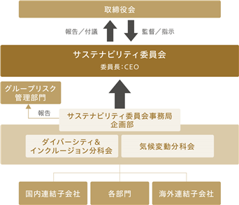

当社グループの経営方針、経営環境及び対処すべき課題等は、以下のとおりであります。
なお、文中の将来に関する事項は、当連結会計年度末現在において当社グループが判断したものであります。
(1）経営方針
当社グループは、貴金属事業及び環境保全事業の拡大により発展を遂げ、環境と社会をつなぐ循環経済の担い手として、今後も社会貢献することで発展し続けていくことを目指しております。また、その過程においては、安定的な利益の確保と持続的な成長の維持との均衡を重視しており、これらを通して企業価値を高め、長期に亘って顧客、株主、従業員を含むすべてのステークホルダーの期待に応えることを基本方針としております。
(2）経営戦略等
当社グループは、2030年に向けた中長期ビジョンにおいて、ありたい姿を「環境と社会をつなぐ循環経済の担い手となる」とし、「地球環境に配慮した資源循環の推進」「脱炭素思考のウェイストマネジメント」をミッションに掲げています。社会の課題を解決する事が当社グループの価値を高めると考え、「収益性を高める事業基盤強化」「貴金属事業の新分野開拓」「一層のグローバリゼーション推進」「事業発展を支える人材形成」「バランスシートの最適化」の５つの戦略主題を定め、取り組みを推進しています。また連結営業利益と親会社所有者帰属持分当期利益率（ROE）を特に重要な経営指標と考えております。
(3）経営環境
当連結会計年度におけるわが国経済は緩やかな拡大を続けましたが、中東情勢の影響による原油価格上昇やインフレ圧力の高まりにより、世界経済の先行きに対する不透明感が高まりました。このような経営環境を踏まえながら、当社グループは持続的な利益成長と企業価値の向上に向けた取り組みを一層強化してまいります。
(4）優先的に対処すべき事業上及び財務上の課題
① 貴金属事業セグメント
〔貴金属リサイクル事業〕
○坂東工場を土台として、AI関連の電子・半導体をはじめとする成長市場に対応する。
○白金族回収の技術開発を強化し、触媒・医農薬・水素分野等において事業を拡大する。
○アジア地域における工場建設および営業強化により、国際的に貴金属回収量を拡大する。
○グリーンメタルの販売を拡大し、貴金属リサイクル事業の収益性を高める。
○リテール分野における貴金属販売量を拡大する。
○「責任ある貴金属管理」の適切な運用により、貴金属取引におけるリスクを抑制する。
〔北米精錬事業〕
○北米精錬設備を増強し、生産効率を一層高める。
○精錬原料の入荷量を増やすとともに、精錬取引条件を最適化する。
○倉庫事業やトレーディング事業などの成長を加速する。
② 環境保全事業セグメント
○持分法適用会社の事業を通じて、循環型社会形成に資する発展を支援する。
(5）内部管理体制の整備・運用状況
① コーポレート・ガバナンスに関する基本的な考え方及びその施策の実施状況
当該事項につきましては、コーポレート・ガバナンスに関する報告書に記載しております。
② 内部管理体制の充実に向けた取り組みの最近１年間における実施状況
当社グループ内で「内部統制推進会議」を組織し、内部統制のためのルールについて運用状況を確認・評価するなど、内部統制強化のための継続的な活動を行っております。
当社グループは「この手で守る自然と資源」をグループ共通のパーパスとして掲げ、長きにわたり事業活動を展開してきました。当社の事業活動はサステナビリティ貢献そのものであり、事業の成長が社会的課題の解決につながっています。持続可能な社会の実現を目指し、当社が優先的に解決に向けて取り組むべき社会的課題に対して、テーマおよび目標を設定し、その達成に向けて積極的に取り組んでいます。
①ガバナンス
当社グループは、サステナビリティを経営上の重要事項と位置づけ、グループ全体での推進体制としてサステナビリティ委員会を設置しています。サステナビリティ委員会は代表取締役社長（CEO）を委員長とし、グループ会社の社長ならびに技術部門・管理部門の責任者で構成されています。
同委員会は、当社グループのパーパスである「この手で守る自然と資源」に基づき、持続可能な社会の実現に向けて優先的に取り組むべき課題（SDGs重点テーマ）を審議・承認するとともに、当該テーマに関連するリスクおよび機会、指標と目標の設定について、中長期的な視点から監督を行っています。
また、サステナビリティ委員会の下部組織として、ダイバーシティ＆インクルージョン分科会および気候変動分科会を設置し、SDGs重点テーマごとの具体的な施策の検討、進捗管理および実績評価を行っています。各分科会での検討結果は、四半期ごとに開催されるサステナビリティ委員会へ報告・付議され、改善策や今後の対応方針について審議されています。
取締役会は、サステナビリティ委員会からの報告を受け、重要事項についての意思決定を行うとともに、社外取締役を中心とした多様な視点からの意見を踏まえ、サステナビリティ推進体制全体を監督しています。

当連結会計年度 サステナビリティ委員会・取締役会審議事項
|
開催年月 |
審議事項 |
|
2025年６月 |
・SDGs重点テーマの目標レビューと2024年度実績確認 ・2025年度のサステナビリティ活動進捗確認と今後の取組内容検討 |
|
2025年９月 |
・D&I活動進捗確認と今後の取組内容検討 |
|
2025年12月 |
・2025年度上期SDGs重点テーマの実績進捗確認 ・新工場（坂東）の環境効果レビュー |
|
2026年３月 |
・2026年度のサステナビリティ活動内容検討 |
②リスク管理
当社グループでは、サステナビリティに関連するリスクおよび機会について、全社的なリスク管理プロセスの中に組み込み、体系的に管理しています。
まず、サステナビリティに関する重要なリスクと機会については、サステナビリティ委員会および各分科会を通じて評価・識別されています。各分科会において、SDGs重点テーマに関連するリスクおよび機会の内容、顕在化の可能性、事業への影響度について定期的に評価を行い、その結果をサステナビリティ委員会で継続的に審議しています。
これらのサステナビリティ関連リスクは、サステナビリティ委員会での審議を経たうえで、グループリスク管理部門に共有され、取締役会の監督のもとで運用される全社的なリスク管理プロセスへと反映されます。全社的なリスク管理体制においては、代表取締役社長（CEO）、グループ会社の社長およびグループリスク管理部門が中心となり、リスクの網羅的な把握、評価、識別および低減策の検討を行っています。
特に気候変動に関するリスクについては、TCFD提言を踏まえ、2030年および2050年を見据えたシナリオ分析を実施し、移行リスクおよび物理リスクの両面から事業への影響を評価しています。
③戦略
当社グループは、事業活動そのものがサステナビリティへの貢献であり、事業成長が社会的課題の解決につながるとの考えのもと、優先的に取り組むべき課題としてSDGs重点テーマを設定しています。
SDGs重点テーマは、事業マテリアリティおよび人材育成・SDGsへの貢献の観点から計５つのテーマで構成されており、それぞれについて事業との関係性、想定されるリスクおよび機会を整理しています。
これらのテーマは、部門横断的な体制により、①SDGsに関する検討の開始、②事業とSDGsとの関連性整理、③重点テーマおよびKPI案の検討、④取締役による討議・決定、というステップを経て特定されました。特定後も、事業環境や社会要請の変化を踏まえ、サステナビリティ委員会において定期的な見直しを行っています。
また、気候変動については、TCFD提言に基づき、政策・法規制、市場、技術等の観点からリスクと機会を整理し、それぞれに対する対応策を検討・実行することで、中長期的な企業価値の向上を目指しています。
人的資本については、「ワークライフバランスとダイバーシティの基盤充実」を重点テーマの一つとして位置づけ、多様な人材が能力を最大限発揮できる環境整備を進めることで、持続的な成長を支える組織基盤の強化を図っています。
＜優先的に取り組むべき課題（SDGs重点テーマ）＞
当社グループでは優先的に取り組むべき課題（SDGs重点テーマ）として５つのテーマを設定しています。それぞれの内容ならびにリスクと機会は次の通りです。
|
|
テーマ |
内容 |
リスク |
機会 |
|
事業マテリアリティ |
１．貴金属リサイクルの拡大 |
限られた地球資源をよりいっそう有効に活用するために、貴金属リサイクルをグローバルに拡大・推進します。 |
・新しい種類の貴金属リサイクル技術開発にかかるコストの増加 ・各国や地域における規制強化によるコストの増加や事業見直しの可能性 ・貴金属価格下落が収益に影響を与える可能性 ・リサイクル市場への新規参入企業増加による競争激化 |
・限りある資源と地球環境を守り、持続可能な世界の実現への貢献 ・リサイクル技術向上による新たな特許やノウハウを生み出す可能性 |
|
２．人・社会・環境にやさしい貴金属供給 |
紛争鉱物を含まない原材料や貴金属含有スクラップから生産される人権や環境に配慮した貴金属製品の供給を拡大し、責任ある貴金属管理を推進します。 |
・人権や環境に配慮した貴金属調達の実施、認証取得等にかかるコストの増加 ・各国や地域における規制強化によるコストの増加の可能性 ・サプライチェーン上で紛争鉱物や人権侵害が発生した場合にブランド価値が損なわれる可能性 |
・人権や環境に配慮した貴金属製品供給によるブランド価値向上や競争優位性の確立 ・人権や環境に配慮した貴金属の需要拡大による付加価値販売の強化 ・紛争や人権問題の解決を通じた持続可能な世界の実現への貢献 |
|
|
３．CO2排出量の削減 |
各拠点での省エネ活動や次世代カーへの切り替え、CO2低排出電力プランへの切り替え等を通じて、グループ全体でCO2排出量の削減に取り組みます。 |
＜気候変動に対する取り組み＞に記載 |
＜気候変動に対する取り組み＞に記載 |
|
|
人材育成・ SDGsへの貢献 |
４．ワークライフバランスとダイバーシティの基盤充実 |
働き方改革・健康経営・ダイバーシティ推進等により、多様な人材が活躍できる基盤を充実させて、働きがいの向上に努めます。 |
・新しい制度導入による業務プロセスやコミュニケーションに一時的な混乱が生じる可能性 ・従業員エンゲージメントの低下や人材流出の可能性 |
・人材獲得競争における優位性の確立 ・従業員エンゲージメント向上による生産性や創造性の向上、離職率の低下 ・人材の多様化によるイノベーション促進 |
|
５．SDGs活動の奨励・支援 |
個人・グループによるボランティア活動等、本業以外でSDGsに貢献する活動を「AREホールディングスSDGs活動」として奨励・支援します。 |
・SDGs活動の奨励・支援にかかるコストの増加 ・SDGs活動への評価が見えにくいことによる従業員のモチベーション低下の可能性 |
・持続可能な世界の実現への貢献 ・SDGs活動を通じた従業員のリーダーシップ、問題解決能力、多様性理解などのスキル向上 ・地域社会をはじめとするステークホルダーとの繋がり強化 |
このテーマは次のステップで特定しました。特定後もサステナビリティ委員会においてテーマや目標について見直しを行い、さまざまな事業環境の変化に合わせて最適な取り組みが出来る様努めています。
|
課題特定のステップ |
||
|
STEP１ |
SDGs検討の開始 |
部門横断の「SDGs推進チーム」（現：サステナビリティ委員会）を編成し、SDGsの理解・検討を開始 |
|
STEP２ |
事業とSDGsの関連性確認 |
当社グループの各事業とSDGsの17のゴール、169のテーマとの関連を網羅的に確認し、リスクと機会の両面で整理 |
|
STEP３ |
重点テーマ・KPI案の検討 |
重要度の高いものについて各部門責任者と協議を実施し、2030年までの重点テーマと目標案を作成 |
|
STEP４ |
SDGs重点テーマの決定 |
取締役全員で重点テーマとKPIについてディスカッションを行い、当社グループが取り組むべき課題を決定 |
＜気候変動に対する取り組み＞
2030年における当社貴金属事業（国内及び北米事業）、環境保全事業に影響を及ぼす気候変動関連のリスクと機会の抽出を行うとともに、「大」「中」「小」の３段階で定性的に評価しました。その際には2030年以降2050年に向けての気候変動の更なる影響についても考慮しました。その結果、「政策・法規制」「市場」「技術」などが特定されました。営業利益に与える影響をベースに、影響度合いを「大」「中」「小」の３つに区分しています。営業利益の３％以上の影響があるものは影響度「大」、営業利益の１％以上から３％未満の影響があるものについては影響度「中」、営業利益の１％未満の影響に留まるものは影響度「小」と定義しています。
|
項目 |
内容 |
2030年 |
2050年 |
対応策 |
|||
|
４℃ |
1.5℃ |
||||||
|
リスク |
移行 リスク |
政策・法規制 |
・カーボンプライシング（含む炭素税）の適用によるコストの増加 |
－ |
大 |
↗ |
・CO2フリー電力への切り替え、水素を含む工場使用燃料の変更、営業車両のEV化等を通じた2030年度CO2削減目標の達成 |
|
物理 リスク |
急性 |
・台風や水害等の自然災害激甚化により施設が損傷し、長期間操業が停止 |
－ |
－ |
↗ |
・ハザードマップに基づき影響が想定される事業所のBCMの拡充 ・大型の設備投資時に、災害に強い立地の選定や災害対策を実施 |
|
|
機会 |
移行 リスク |
政策・法規制 |
・カーボンプライシングの適用により、CO2排出が相対的に少ないリサイクル金属の評価向上、競争力増加 ・規制対応や、CO2排出量報告の強化 |
－ |
大 |
↗ |
・トレーサビリティを活かしたリサイクル金属の付加価値販売を強化 ・CO2排出量分析等付加価値をつけた産業廃棄物管理システムの提供 ・規制対応が難しい企業の支援を通じた事業の拡大 |
|
市場 |
・規制対応や、CO2排出量報告の強化 |
－ |
大 |
→ |
・低品位スクラップの取り扱い、取り扱い金属の拡充等リサイクル品目の拡充 |
||
|
技術 |
・水素等脱炭素に資する技術開発の早期化、早期商業化に向けたインセンティブの拡大 |
－ |
中 |
↗ |
・余剰電力での水素活用等のさらなる推進 |
||
＜人的資本に関する取り組み＞
当社が目指す中長期ビジョン達成のためには、従業員全員がAREグループウェイを理解し、実践する必要があると考えます。多様な従業員一人ひとりが人を大切にして協力しあい、自ら考えながら活き活きと挑戦し、革新を追い求めることで、組織全体の生産性が最大化すると私たちは信じます。そのため当社では“従業員一人ひとり”を大切なステークホルダーと位置づけ、優先的に取り組むべき課題（SDGs重点テーマ）の一つに「ワークライフバランスとダイバーシティの基盤充実」を設定しています。多様な従業員がそれぞれ仕事と生活全体との調和を得て自分らしく輝くための、ダイバーシティ・エクイティ＆インクルージョン推進や健康経営を基盤に据え、日々の仕事の中で学び続け、能力発揮をしていただくための環境を整えています。また今後人材の流動化がより進んでいくことが想定される労働市場においては、エンゲージメントの向上こそが最大のリテンションにつながると考えています。人的資本への投資により従業員エンゲージメントの向上をもたらし、AREグループウェイを核とした他社には真似できない組織ケイパビリティの保持を目指しています。ワークライフバランスとダイバーシティの基盤充実に向けた具体的な取り組みとして、新しい働き方や女性管理職比率向上施策などを推進しています。当社の人材戦略等については、
＜参考リンク＞
ワークライフバランスとダイバーシティの基盤充実
https://www.are-holdings.com/sustainability/social/human_capital/diversity/
④指標と目標
当社グループは、SDGs重点テーマごとに、具体的な指標（KPI）および目標を設定し、その達成状況を継続的にモニタリングしています。
指標および目標の進捗状況は、各分科会およびサステナビリティ委員会において定期的に確認され、取締役会に報告されることで、経営レベルでの管理・監督を行っています。さらに、サステナビリティへの取り組みを経営に一層統合する観点から、2025年度分より、取締役報酬の一部をこれらの目標達成率と連動させる制度を導入しています。
設定している主な指標と目標には、貴金属リサイクル量およびそれに伴うCO2削減効果、グループ全体のCO2排出量削減目標、ならびにワークライフバランスとダイバーシティに関する各種人的資本指標が含まれます。
|
|
テーマ |
指標 |
対象 |
目標年度 |
内容 |
実績 （当連結会計年度） |
|
事業マテリアリティ |
貴金属リサイクルの拡大 |
貴金属リサイクル量の総量 （対象金属：金、銀、プラチナ、パラジウム、ロジウム） |
連結会社 |
2030年度 |
300ｔ達成 |
572.8ｔ |
|
貴金属リサイクルによるCO2削減効果量 （対象金属：金、銀、プラチナ、パラジウム、ロジウム、銅） |
連結会社 |
2030年度 |
83.7万t-CO2達成 |
121.0万t-CO2 |
||
|
CO2排出量の削減 |
CO2排出量 （Scope１および２） |
連結会社 |
2030年度 |
2023年度比△42％達成 |
1.7万t-CO2 |
|
|
2050年度 |
カーボンニュートラルを実現 |
－ |
||||
|
人材育成・SDGsへの貢献 |
ワークライフバランスとダイバーシティの基盤充実 |
|
国内連結会社 |
|
|
|
|
|
国内連結会社 |
|
|
|
||
|
|
国内連結会社 |
|
法定雇用率以上の雇用率を満たす |
|
||
|
|
国内連結会社 |
|
|
|
||
|
|
国内連結会社 |
|
|
|
（注）１．CO2排出量の実績（当連結会計年度）については、第三者検証前の暫定値です。
２．ワークライフバランスとダイバーシティの基盤充実の各目標については、日本国内で適用される法律等に基づいているため国内連結会社のみを対象としています。
有価証券報告書に記載した事業の状況、経理の状況等に関する事項のうち、当社グループの経営成績及び財政状態等に影響を及ぼす可能性のある主なリスクには、以下のようなものがあります。これらは投資家の判断に重要な影響を及ぼす可能性のある事項と考えておりますが、記載した項目は当社グループが当該有価証券報告書提出日現在で認識しているものに限られており、全てのリスクが網羅されているわけではありません。なお、当該リスクが顕在化する可能性の程度や時期、当該リスクが顕在化した場合に当社グループの経営成績等の状況に与える影響につきましては、合理的に予見することが困難であるため記載しておりません。
当社グループは、事業活動上のリスクの把握・評価および対策を実施する体制として、監査等委員会の監督下に内部監査部門を設置してガバナンス強化に努めるとともに、内部統制推進会議や安全推進会議を定期的に開催して、コンプライアンスおよび安全体制を確立するなど、事業を取り巻く様々なリスクに対して適切な管理を行い、リスクの顕在化の未然防止を図っております。
(1）貴金属相場および為替相場について
当社グループの「貴金属事業」における主力製品である貴金属および希少金属は、国際市場で取引されており、その価格は、国際的または地域的な需給、政治経済社会動向、為替相場、金融政策等、世界のさまざまな要因により変動しております。このため、当社グループは基本的に先渡取引等を通して貴金属価格をヘッジしていますが、ロジウムは流動性に乏しくヘッジ手段が限られているため、他の手段も活用しながら、リスクの軽減に取り組んでおります。また、主要な貴金属価格の変動状況等について適時経営陣に報告しております。貴金属相場および為替相場の変動の幅、先渡取引の市場環境等により、当社グループの経営成績および財政状態に影響を与える可能性があります。
(2）法規制について
当社グループが事業展開している国および地域においては、事業の許可、輸出入・輸送規制、商取引、労働、租税、知的財産権、環境保全等のさまざまな法規制の適用を受けております。当社グループは、コンプライアンス重視の姿勢の下、全事業領域に関連する法改正情報を一元管理して現場へ周知徹底する仕組を構築し、法規制および社会的ルールの遵守を徹底しておりますが、万一、これらの法規制および社会的ルールが遵守できなかった場合や、各国政府による環境・気候変動対策等に係る新たな規制導入・基準強化を含め法規制および社会的ルールの変化によって事業が制約を受ける等の事態が発生した場合には、当社グループの経営成績および財政状態に影響を与える可能性があります。
(3）経済変動について
当社グループの２つの事業セグメントである「貴金属事業」「環境保全事業」の取引業界のひとつである製造業に関しては、日本のみならずさまざまな国や地域の経済状況の影響を受けます。景気後退等に伴ってそれらの業界の需要が減少した場合には、当社グループの経営成績および財政状態に影響を与える可能性があります。また、貴金属リサイクル事業は、エレクトロニクス関連機器や自動車等の最終製品に含まれる貴金属をリサイクルしていることから、消費動向の影響を受けるため、一般消費水準の減退による個人消費の落ち込み等が当社グループの経営成績および財政状態に影響を与える可能性があります。さらに、貴金属事業における原材料の調達、前渡し取引、成長投資およびM&A等に伴い、資金需要が増加する可能性があります。当社グループは資金調達手段の多様化に取り組んでおりますが、世界的な貴金属需給の逼迫や、国内外の金利上昇、金融市場の混乱、金融機関の与信姿勢の変化等により、必要な資金を機動的かつ有利な条件で調達できない場合や、調達コストが増加した場合には、当社グループの経営成績および財政状態に影響を与える可能性があります。
(4）事業環境について
当社グループの２つの事業セグメントである「貴金属事業」「環境保全事業」は、事業分野毎の関連する法規制や許認可等の変更により顧客ニーズが大きく変化する可能性や、顧客企業の海外移転が想定以上に進展する可能性があります。また、業界再編等により事業環境が大きく変化する可能性もあります。加えて、当社グループでは、新事業・新分野への挑戦を進めており、事業の実施にあたっては執行会議等で十分な検討を行い、必要に応じてリスク管理体制を講じていますが、事業環境が想定と異なった場合等にはリスクが顕在化する可能性があります。さらに、地政学的緊張の高まりや各国の経済安全保障政策に伴う戦略物資の輸出入規制強化等により、当社グループおよび顧客企業のサプライチェーンやコンプライアンス上の取り扱いに予期せぬ混乱が生じ、事業環境が変化するリスクもあります。これらの要因により当社グループの経営成績および財政状態に影響を与える可能性があります。
(5）競合との競争激化について
当社グループの２つの事業セグメントである「貴金属事業」「環境保全事業」は、事業分野毎にさまざまな企業と競合しております。グループ各社は、営業努力をはじめ、技術・製品面やコスト対応面等での取り組みにより、顧客ニーズに的確にお応えすることで、競争優位性を確保すべく努力を続けておりますが、競合他社との競争の激化により、各社の製品・サービスが厳しい価格競争にさらされる可能性があります。その結果によっては、当社グループの経営成績および財政状態に影響を与える可能性があります。
(6）海外事業展開について
当社グループは、海外事業の拡大を成長戦略の一つとして、北米・アジア等の国および地域において事業展開しておりますが、関税制度の変更を含む事業に不利な政治または経済的事象の発生、労働環境の違いによる労働争議等の発生、現地での適切な人材確保の不確実性、紛争・テロその他の要因による社会的混乱の可能性、ビジネスインフラ未整備による当該国および地域当局からの不当な介入等のリスクが内在しております。また、国際的な緊張の高まりに伴う各国政策・規制（制裁措置や輸出入管理の強化等）の変化や、グローバルな物流網の混乱も、現地事業の継続に影響を及ぼす可能性があります。北米精錬事業においては精錬を土台とした貴金属倉庫業や付加価値サービスを拡大しており、その中にはトレーディングや融資等も含まれています。事業の実施の際には十分なリスク分析を行うとともに、リスク管理部門の関与や取締役会等で議論を行う等、十分な管理体制を講じていますが、経済環境や取引先の信用状況が悪化した場合は、リスクが顕在化する可能性があります。これらの事態が発生した場合には、当社グループの経営成績および財政状態に影響を与える可能性があります。
(7）企業買収について
当社グループは、これまで企業買収によって事業内容および事業規模の拡大を図ってきており、今後も当社グループのさらなる成長に資する案件に対して前向きに取り組んで行く予定です。対象事業および企業との統合効果を最大限に高めるために、当社グループの事業戦略やオペレーションとの統合・融合を図っておりますが、人材や資産の統合等が想定通り進まなかった場合には、期待した統合・融合効果をあげられず、当社グループの経営成績および財政状態に影響を与える可能性があります。
(8）のれん・固定資産の減損について
当社グループは、企業買収の際に生じたのれんや、事業用のさまざまな有形固定資産および無形資産を計上しております。買収時は、財務、法務、人事、設備等の観点から十分な調査を実施しておりますが、買収した企業や事業が、市場環境の変化等によって当初予定した業績を上げられず、経営成績や収益性が著しく悪化した場合、これらの資産の減損が発生する可能性があります。そのような場合には、当社グループの経営成績および財政状態に影響を与える可能性があります。
(9）自然災害・感染症について
大規模な地震・台風等の自然災害や新たな感染症の発生等によって、当社グループの生産・物流・販売および情報管理関連施設等の拠点に甚大な被害が発生する可能性があります。当社グループでは、事業継続マネジメント（BCM）の構築、水害対策、防災訓練、社員安否確認システムの構築等の対策を講じておりますが、これらは自然災害や未知の感染症等による被害を完全に排除できるものではなく、発生した場合には当社グループの経営成績および財政状態に影響を与える可能性があります。
(10）安全衛生について
当社グループは、労働災害や設備事故等の撲滅に向けて、経営陣も参加する「安全推進会議」を開催し必要な措置を講じる等、安全管理体制の強化ならびに定期的な災害・事故防止活動を行っておりますが、これらの発生を完全に防止または軽減できる保証はありませんので、重大な労働災害や設備事故等が発生した場合には、当社グループの経営成績および財政状態に影響を与える可能性があります。
(11）人材について
当社グループの中長期的な成長は、多様な従業員一人ひとりが人を大切にして協力しあい、自ら考えながら、活き活きと挑戦し、革新を追い求めることで、組織全体の生産性が最大化することにより達成されると考えます。この考えのもと、ダイバーシティ・エクイティ＆インクルージョンの推進や健康経営を基盤に据え、多様な人材がそれぞれ自分らしく仕事と生活全体との調和を図りながら働ける環境整備に取り組んでいます。具体的には、障がい者雇用推進、女性活躍推進、週休３日モデルといった働き方改革、中長期的に中核人材を獲得するための採用活動や種々の人材育成プログラムを実施しています。しかしながら、事業展開のスピードが増し、優秀な人材の確保や必要な戦力の整備が適切なタイミングで実施できない場合、当社グループの経営成績および財政状態に影響を与える可能性があります。
(12）研究開発について
当社グループは、貴金属のリサイクルを効果的に行うため、独自のプロセス技術開発と分析技術開発を進めております。しかしながら、これら新技術の研究開発は、市場環境の変化、競合状況、開発成果の事業化の成否等、さまざまな影響を受けることから、研究開発に要した費用の回収等について不確実性が高いと考えられます。そのため、当初想定した研究開発成果が上がらない場合、当社グループの経営成績および財政状態に影響を与える可能性があります。
(13）重要な知的財産権について
当社グループは、事業展開にとって重要な知的財産権を保護すべく、適切な管理を行っております。しかしながら、予期せぬ事態により外部に流出する可能性があるほか、特定の地域においてはこれらの知的財産権を完全に保護することが困難なことがあります。その結果、第三者による当社グループの知的財産権を使用した類似製品・サービスの製造・販売等を効果的に防止できない可能性があります。さらに、当社グループが将来に向けて開発している製品・技術が、意図せず第三者の知的財産権等を侵害してしまう場合や、従業員との関係において、職務発明の帰属や対価をめぐり係争となる可能性もあります。それらの結果によっては、当社グループの経営成績および財政状態に影響を与える可能性があります。
(14）製品品質保証・製造物責任について
当社グループは、品質保証部門が中心となり、お客様により安心・満足していただける製品を提供するためにISO9001を取得し、品質マネジメントシステムの継続的改善・品質の維持向上に努める等、製品の品質保証体制に万全を期しておりますが、当社グループの生産した製品に起因する損害が発生した場合には、当社グループの経営成績および財政状態に影響を与える可能性があります。
(15）環境保護について
当社グループは、「環境方針」に基づいて「全社環境目標（年間計画）」を策定し、各拠点に環境委員会を設置して、環境法規制の遵守、計画の見直し、環境教育等を審議し経営層に報告する等、地球環境保護に向けたさまざまな取り組みを継続しております。しかしながら、環境汚染等の環境に関するリスクを完全に防止または軽減できる保証はないため、当社グループに起因する重大な環境汚染等が発生した場合には、当社グループの経営成績および財政状態に影響を与える可能性があります。
(16）気候変動について
国連気候変動枠組条約第21回締約国会議（COP21）において「パリ協定」が採択、各国で批准されたのを機に、気候変動や地球温暖化の原因とされる温室効果ガスの削減を目的とした取り組みが世界的に進められております。当社グループにおいても、気候変動への取り組みを事業マテリアリティの一つとして、2030年までにCO2排出量を2023年比42％削減する目標を掲げ、削減に努めています。また2050年までにカーボンニュートラルを目指すことを宣言するとともに、CO2排出量（Scope1、2および3）を計測し第三者による検証を受けています。加えて、「気候関連財務情報開示タスクフォース（TCFD）」の提言に賛同し、同提言に沿った開示および対応を実施しています。その結果、将来的な気候変動が与える影響の、移行リスクとして炭素税を含むカーボンプライシング制度が導入された場合や、物理リスクとして異常気象により自然災害が激甚化し、当社グループの設備等に甚大な影響を及ぼし、事業活動が長期間にわたって停止した場合は、当社グループの経営成績および財政状態に影響を与える可能性があります。
(17）情報セキュリティについて
当社グループが利用しているパソコンやタブレット端末等には、最大限のセキュリティ対策を講じており、これらの導入や運用に際しては、システムトラブルや情報の盗難・紛失が発生しないよう、情報セキュリティ対策を実施するとともに、情報リテラシー向上を目的とした社員教育を定期的に行っております。しかしながら、高度化・巧妙化するサイバー攻撃によるコンピュータウイルスへの感染やハッキング、ソフトウエアの不備等によるシステム障害が発生した場合には、重要データの破壊・改ざんや漏洩、生産・業務の中断等の不測の事態が生じる可能性があります。また、生成AI等の新たなデジタル技術の活用に起因して、社内の機密情報が意図せず外部に送信される可能性や、AIの誤った出力に基づく判断ミスが生じることにより、機密情報の漏洩や誤情報の発信等による社会的信用の低下といった不測の事態が発生する可能性があります。これらの事象が発生した場合には、当社グループの経営成績および財政状態に影響を与える可能性があります。
(18）訴訟・その他の法的手続きについて
当社グループが国内および海外で事業展開する上で、訴訟その他の法的手続きの対象になる可能性があり、当社グループにおいてすでに発生している、または発生のおそれのある重大な訴訟案件等については、適宜モニタリングを実施するとともに、必要に応じて対策を講じております。しかしながら、当社グループがその当事者となった場合には、多額の損害賠償金等が発生する可能性があり、その結果、当社グループの経営成績および財政状態に影響を与える可能性があります。
(19）責任ある貴金属管理について
当社グループは、貴金属サプライチェーンにおける法令遵守、人権・労働への配慮、安全衛生、環境保全、公正な取引等の社会的責任を果たすため、国際的なガイダンスに準拠した責任ある貴金属管理体制を構築し、第三者機関による監査を実施、認証を取得・維持しています。しかしながら、サプライチェーン上で人権侵害、資金洗浄、テロリズムへの資金供与、贈収賄、不正取引、経済制裁違反等の重大なコンプライアンス上の問題が発生または判明した場合、あるいは関連する法令・規制や認証基準の強化・改定に適切に対応できない場合には、認証の維持や取引継続に支障を来す可能性があります。これらの事象が生じた場合、社会的信用の低下を通じて、当社グループの経営成績および財政状態に影響を与える可能性があります。
(1）業績等の概要
① 業績
|
|
売上収益 （百万円） |
営業利益 （百万円） |
税引前利益 （百万円） |
親会社の所有者に帰属する当期利益 （百万円） |
基本的１株当たり当期利益 （円） |
|
当連結会計年度 |
569,992 |
37,088 |
34,706 |
24,441 |
315.49 |
|
前連結会計年度 |
506,211 |
19,984 |
20,483 |
14,319 |
187.13 |
|
増減率（％） |
12.6 |
85.6 |
69.4 |
70.7 |
68.6 |
貴金属リサイクル事業の営業利益は前期比で増加しました。宝飾分野では、取引毎の採算性向上の取り組みにより、金の回収量は前期比で減少しましたが、営業利益は前期比で増加しました。デンタル分野では、回収量は前期比で減少しましたが、費用構造の改善などにより、営業利益は前期比で増加しました。電子分野では、回収量は前期と同水準でありましたが、貴金属価格の影響などにより、営業利益は前期比で増加しました。触媒分野では、回収量は前期と同水準でありましたが、営業利益は前期比で減少しました。また、価格プレミアムを付けたリサイクル貴金属の販売量およびリテール向けの貴金属製品の販売量は前期比で増加しました。
北米精錬関連事業の営業利益は前期比で増加しました。精錬分野では、金銀の原材料の入荷量が前期比で増加し、営業利益は前期比で増加しました。加えて、北米地域最大の精錬規模を活かしながら、米国の通商政策や世界の金融情勢の変化に伴う金銀需給の変動に適切に対処した結果、製品分野、倉庫分野、トレーディング分野のいずれにおいても営業利益は前期比で増加しました。
これらの結果、貴金属事業セグメントの営業利益は前期比で大幅に増加しました。また、環境保全事業セグメントの持分法投資損益は前期と同水準でありました。
以上の結果、当連結会計年度の業績は、売上収益569,992百万円（前年同期比63,781百万円増、12.6％増）、営業利益37,088百万円（前年同期比17,103百万円増、85.6％増）、税引前利益34,706百万円（前年同期比14,223百万円増、69.4％増）、親会社の所有者に帰属する当期利益24,441百万円（前年同期比10,121百万円増、70.7％増）となりました。セグメント別の売上収益は、貴金属事業が569,863百万円（前年同期比63,733百万円増、12.6％増）となりました。
セグメントの業績は次のとおりです。
|
|
売上収益 |
セグメント利益（営業利益） |
||||
|
前連結会計年度 （百万円） |
当連結会計年度 （百万円） |
増減率 （％） |
前連結会計年度 （百万円） |
当連結会計年度 （百万円） |
増減率 （％） |
|
|
貴金属事業 |
506,130 |
569,863 |
12.6 |
18,339 |
35,424 |
93.2 |
|
環境保全事業 |
－ |
－ |
－ |
1,919 |
1,845 |
△3.8 |
|
計 |
506,130 |
569,863 |
12.6 |
20,258 |
37,270 |
84.0 |
|
その他 |
80 |
129 |
60.1 |
△273 |
△181 |
－ |
|
合計 |
506,211 |
569,992 |
12.6 |
19,984 |
37,088 |
85.6 |
|
調整額 |
－ |
－ |
－ |
－ |
－ |
－ |
|
連結 |
506,211 |
569,992 |
12.6 |
19,984 |
37,088 |
85.6 |
② 財政状態の状況
|
|
前期末（百万円） |
当期末（百万円） |
増減（百万円） |
増減率（％） |
|
資産合計 |
490,037 |
615,388 |
125,351 |
25.6 |
|
資本合計 |
126,349 |
230,555 |
104,206 |
82.5 |
|
親会社所有者帰属 持分比率 |
25.8％ |
37.5％ |
+11.7ポイント |
－ |
当連結会計年度末の資産につきましては、前連結会計年度末に比べ125,351百万円増加し、615,388百万円となりました。これは主に、営業債権及びその他の債権が10,996百万円、棚卸資産が71,236百万円、その他の金融資産（流動）及び金融資産（非流動）が44,088百万円増加したことによるものです。
負債につきましては、前連結会計年度末に比べ21,144百万円増加し、384,833百万円となりました。これは主に、社債及び借入金が106,659百万円減少した一方、営業債務及びその他の債務が86,869百万円、その他の金融負債が14,967百万円、繰延税金負債が16,482百万円増加したことによるものです。
資本につきましては、前連結会計年度末に比べ104,206百万円増加し、230,555百万円となりました。これは主に、当期包括利益による増加80,352百万円、新株の発行24,141百万円、自己株式の処分7,286百万円、剰余金の配当による減少7,662百万円によるものであります。
以上の結果、親会社所有者帰属持分比率は前連結会計年度末の25.8％から37.5％となりました。
③ キャッシュ・フローの状況
|
|
前連結会計年度 （百万円） |
当連結会計年度 （百万円） |
増減 （百万円） |
|
営業活動によるキャッシュ・フロー |
14,685 |
△99,385 |
△114,071 |
|
投資活動によるキャッシュ・フロー |
250 |
△349 |
△599 |
|
財務活動によるキャッシュ・フロー |
△6,207 |
91,878 |
98,086 |
|
現金及び現金同等物期末残高 |
17,555 |
10,336 |
△7,219 |
当連結会計年度末における現金及び現金同等物（以下「資金」という。）は、前連結会計年度末より7,219百万円減少し、10,336百万円となりました。
当連結会計年度における各キャッシュ・フローは次のとおりであります。
（営業活動によるキャッシュ・フロー）
当連結会計年度において営業活動の結果使用した資金は99,385百万円（前年同期は14,685百万円の獲得）となりました。これは主に、税引前利益34,706百万円（前年同期比69.4％増）、減価償却費及び償却費2,978百万円（前年同期比7.7％増）、棚卸資産の増加額71,191百万円（前年同期比312.9％増）、営業債権及びその他の債権の減少額46,295百万円（前連結会計年度は183,858百万円の増加）、営業債務及びその他の債務等の減少額110,263百万円（前連結会計年度は178,214百万円の増加）、法人所得税の支払額6,480百万円（前年同期比31.8％増）によるものであります。
（投資活動によるキャッシュ・フロー）
当連結会計年度において投資活動の結果使用した資金は349百万円（前連結会計年度は250百万円の獲得）となりました。これは主に、貸付金の回収による収入9,065百万円（前年同期比53.0％減）があった一方、有形固定資産の取得による支出8,335百万円（前年同期比12.3％増）、その他の支出2,493百万円等があったことによるものであります。
（財務活動によるキャッシュ・フロー）
当連結会計年度において財務活動の結果獲得した資金は91,878百万円（前連結会計年度は6,207百万円の使用）となりました。これは主に、長短借入金の純増加額59,917百万円（前連結会計年度は6,072百万円の増加）、社債の発行による収入39,833百万円、配当金の支払額7,662百万円（前年同期比17.7％増）によるものであります。
(2）生産、受注及び販売の実績
当社グループの生産・販売品目は広範囲かつ多種多様であり、同種の製品であっても、その容量、構造、形式等は必ずしも一様ではなく、また受注生産形態をとらない製品も多く、セグメントごとに生産規模及び受注規模を金額あるいは数量で示すことはしておりません。
このため生産、受注の実績については、「(1）業績等の概要 ① 業績」におけるセグメントの業績に関連付けて示しております。
販売実績
当連結会計年度における販売実績をセグメントごとに示すと、次のとおりであります。
|
セグメントの名称 |
金額（百万円） |
前年同期比（％） |
|
貴金属事業 |
569,863 |
112.6 |
|
環境保全事業 |
－ |
－ |
|
その他 |
129 |
160.1 |
|
合計 |
569,992 |
112.6 |
（注）１．最近２連結会計年度の主要な相手先別の販売実績及び当該販売実績の総販売実績に対する割合は、次のとおりであります。
２．セグメント間の取引については相殺消去しております。
|
相手先 |
前連結会計年度 （自 2024年４月１日 至 2025年３月31日） |
当連結会計年度 （自 2025年４月１日 至 2026年３月31日） |
||
|
金額（百万円） |
割合（％） |
金額（百万円） |
割合（％） |
|
|
Varinor SA |
147,321 |
29.1 |
222,289 |
39.0 |
|
三井物産㈱ |
164,603 |
32.5 |
－ |
－ |
３．当連結会計年度の三井物産㈱に対する販売実績は、当該販売実績の総販売実績に対する割合が100分の10未満のため記載を省略しております。
(3）経営者による財政状態、経営成績及びキャッシュ・フローの状況の分析
文中の将来に関する事項は当連結会計年度末現在において判断したものであります。
① 当連結会計年度の財政状態及び経営成績の分析
当社グループは、戦略遂行の成果を、連結売上収益、連結営業利益、株主資本当期利益率（ROE）、自己資本比率の４つの経営目標でモニタリングしております。
当連結会計年度の売上収益は569,992百万円（前年同期比12.6％増）、営業利益は37,088百万円（前年同期比85.6％増）、税引前利益は34,706百万円（前年同期比69.4％増）、親会社の所有者に帰属する当期利益は24,441百万円（前年同期比70.7％増）となりました。当社が経営効率化の指標としている株主資本当期利益率（ROE）は13.7％（前年同期比2.4ポイント増加）、自己資本比率は37.5％（前年同期比11.7ポイント増加）となりました。
② キャッシュ・フローの状況の分析・検討内容並びに資本の財源及び資金の流動性に係る状況
(ⅰ)キャッシュ・フロー
「(1）業績等の概要 ③ キャッシュ・フローの状況」に記載のとおりであります。
(ⅱ)財務政策
当社グループは事業成長と資本効率を意識した経営を推進しており、安定的なキャッシュ創出力を基盤に財務健全性を維持しつつ「成長投資」と「株主還元」を両立させることを基本方針としています。この基本方針のもと、持続的な利益成長によってキャッシュ・フローを創出し、資本効率の向上と財務ガバナンスの強化を通じて、財務面からグループ全体の企業価値の向上に努めていきます。
(ⅲ)資金需要
当社グループの運転資金需要のうち主なものは、貴金属事業における原材料の購入、製造経費、販売費および一般管理費等の営業費用によるものです。営業費用の主なものは人件費および減価償却費です。当社グループの研究開発費は様々な営業費用の一部として計上されていますが、研究開発に携わる従業員の人件費が研究開発費の主要な部分を占めています。また、当社グループの投資資金需要のうち主なものは、主力の製造拠点である国内工場および北米拠点の工場を中心とした生産効率向上のための設備投資です。将来の成長に向けた戦略的な資金需要に対して、財務基盤の安定と資本効率の向上を両立させながら積極的に対応する方針です。
(ⅳ)資金調達
当社グループの運転資金および設備投資資金は、主として営業活動で得られた資金により充当し、必要に応じて金融機関からの借入や社債による資金調達を実施しています。これらの借入金および社債について、営業活動から得られるキャッシュ・フローによって十分に完済できるとともに、引き続き今後の成長に必要となる資金を適切に調達することが可能であると考えています。
なお、当社グループは、現在取引している金融機関と良好な関係を築いております。
③ 重要な会計上の見積り及び当該見積りに用いた仮定
当社グループの連結財務諸表は、「連結財務諸表の用語、様式及び作成方法に関する規則」第312条の規定によりIFRS会計基準に準拠して作成しております。この連結財務諸表の作成に当たって、必要と思われる見積りは、合理的な基準に基づいて実施しております。
なお、当社グループの連結財務諸表で採用する重要性がある会計方針、会計上の見積り及び当該見積りに用いた仮定は、「第５ 経理の状況 １ 連結財務諸表等 (1）連結財務諸表 連結財務諸表注記 ３．重要性がある会計方針」及び同「４．重要な会計上の見積り及び見積りを伴う判断」に記載しております。
当社は、ローン契約と社債に付される財務上の特約を有する重要な契約があり、その内容は以下のとおりであります。
１．タームローン契約
① 締結日：2021年５月28日
② 借入先：株式会社国際協力銀行
③ 当初借入金額：70百万米ドル
④ 償還期限：2026年５月28日
⑤ 担保：なし
⑥ 財務上の特約：あり
・各連結会計年度末における連結財政状態計算書の資本合計の金額について、直前の決算期末時点または2020年３月末時点のうち、いずれか高い方の金額の75％以上を維持すること。
・各連結会計年度における連結損益計算書の営業利益を２期連続で赤字としないこと。
なお、提出日現在において上記記載内容にかかる個別の金銭消費貸借契約は弁済を完了しております。
２．シンジケートローン契約
① 締結日：2021年５月25日
② アレンジャー兼エージェント：株式会社三菱UFJ銀行
③ 当初借入金額：5,085百万円
④ 償還期限：2026年５月28日
⑤ 担保：なし
⑥ 財務上の特約：あり
・各連結会計年度末における連結財政状態計算書の資本合計の金額について、直前の決算期末時点または2020年３月末時点のうち、いずれか高い方の金額の75％以上を維持すること。
・各連結会計年度における連結損益計算書の営業利益を２期連続で赤字としないこと。
なお、提出日現在において上記記載内容にかかる個別の金銭消費貸借契約は弁済を完了しております。
３．シンジケートローン契約
① 締結日：2025年７月22日
② アレンジャー兼エージェント：株式会社三井住友銀行
③ 当初借入金額：10,700百万円
④ 償還期限：2030年７月25日
⑤ 担保：なし
⑥ 財務上の特約：あり（注）
（注）詳細は、「第５ 経理の状況 １ 連結財務諸表等 連結財務諸表注記 16．社債及び借入金（その他の金融負債含む）」に記載しております。
４．シンジケートローン契約
① 締結日：2026年３月18日
② アレンジャー兼エージェント：株式会社三菱UFJ銀行
③ 当初借入金額：10,000百万円
④ 償還期限：2031年３月24日
⑤ 担保：なし
⑥ 財務上の特約：あり（注）
（注）詳細は、「第５ 経理の状況 １ 連結財務諸表等 連結財務諸表注記 16．社債及び借入金（その他の金融負債含む）」に記載しております。
(1）研究開発活動の方針
当社グループでは、各事業セグメントにおける競争力を高めるためにコストダウンや市場ニーズに応じた新技術・新商品の開発に積極的に取り組んでいます。
貴金属事業においては、北米におけるプライマリー原料と日本を含むアジアを中心とするセカンダリー原料からの貴金属精製に関して、組成分析から製品化までの一貫したプロセスの効率向上や新技術の開発を行い、持続可能な循環型社会の形成を目指しています。また、環境保全事業においては、日本国内の産業廃棄物の無害化や資源化に関して、処理コスト低減や新技術の開発を行い、地球環境保全への貢献を目指しています。
(2）研究開発活動の体制
当社グループの研究開発活動は、主にアサヒプリテック株式会社テクノセンターが担っています。同センターでは、新しい処理技術や製品および分析技術の開発を担当すると共に、関連する設備の設計や改善・改良および保守をも担当しています。各グループ会社との情報交換・共有化を図りながら、さまざまな技術課題を抽出してその解決に当たっています。技術情報の収集・管理や知的財産の保護および新規事業を含めた企画・開発についてもテクノセンターが中心となって、各グループ会社と連携をとりながら、大学や研究所等の外部機関との共同研究も進めています。また当連結会計年度より、基幹工場である坂東工場に技術開発機能を持ち、現場で発生した課題をタイムリーに捉え早期改善を図る体制や、新技術の実装を短期間で実現する体制を整備しました。さらに当社は、経済産業省をはじめとする国の助成金を活用した研究開発、設備開発を行っています。これらの助成金を活用することで、環境負荷の低減や資源効率的利用に貢献する技術の開発を加速し、企業の競争力向上に取り組んでいます。
(3）研究開発活動の目的、主要課題、研究成果及び研究開発費
当社グループの研究開発活動は、コストダウン、製造期間短縮、品質向上、環境対策、安全性向上などの各種改善、および新商品の提供を目的として、
① 貴金属・希少金属の回収・分離・精製に関する技術
② 貴金属評価のための分析技術
③ 貴金属製品および製造技術
④ 有害物質の拡散防止および無害化に関する技術
⑤ 脱炭素社会に向けた水素製造に関する技術
等の開発を行っています。
主要課題と研究成果は次のとおりです。
＜貴金属事業＞
・貴金属精製技術の開発
北米で実施しているプライマリー原料処理に対しては主に乾式貴金属精製技術の開発を行い、日本を中心にアジアで実施しているセカンダリー原料処理においては主に湿式貴金属精製技術の開発を進めています。また、乾式および湿式の両精製技術を融合させることによって、あらゆる原料に対応できる効果的な貴金属精製技術の確立を目指しています。当連結会計年度においては、2022年４月に茨城県坂東市で稼働したアサヒメタルファイン坂東工場において自動化、省力化の取り組みを進めました。金や銀などの製品製造工程でのロボット活用範囲を拡大し無人生産を実現することで、生産能力拡大とともに生産コストを削減しました。2025年４月にはアサヒプリテック坂東工場が竣工しました。アサヒプリテック坂東工場では、新技術、新設備、生産管理システムを導入することにより電子触媒事業分野での競争力強化を図ります。自動車触媒、化学触媒等に含まれる貴金属の回収工程において、新技術を導入することで貴金属収率の向上および工程期間の短縮を目指します。また、原料の焼成工程においても、排熱の再利用や水素をはじめとするCO2排出量の少ない燃料への変更等を実施することで、既存の工程と比較しCO2排出量削減を実現しました。
・貴金属剥離技術の開発
半導体やLED産業の製造で使用する部材・冶具等の表面に付着した貴金属を安全かつ確実に回収するために、化学剥離技術および物理剥離技術の開発を進めています。当連結会計年度では電極に付着した貴金属を新たな手法で剥離する設備をテクノセンターに導入しました。この設備を活用し処理量拡大に貢献していきます。
・貴金属分析技術の開発
製品の品質維持およびお客様との取引を正確かつ迅速に行うために、X線や誘導結合プラズマ発光分析(ICP)を用いた分析技術の開発を進めています。当連結会計年度においては、国際基準であるISO17025の本格運用を開始しました。当社分析値の透明性、客観性を確保することで、顧客満足度の向上および、新規顧客の開拓へと繋げてまいります。
・リサイクル由来の貴金属を原料としたメッキ化成品製造技術の開発
当社で製造するリサイクル由来（セカンダリー原料）の貴金属は、人・社会・環境に優しい貴金属としてお客様にニーズがあります。そのようなお客様のニーズに応えるために、2022年度にリサイクル由来の貴金属を原料としたメッキ化成品製造ラインを導入し、メッキ化成品の生産販売を開始しました。リサイクル原料から製造した貴金属を化成品として販売することで、リサイクル由来の貴金属の価値向上に繋げていきます。
・脱炭素社会に向けた技術開発
当社製造工程において発生した廃棄物の多くは、外部委託（現ジャパンウェイスト株式会社）を行っています。外部委託先では廃棄物発電を実施し、余剰電力で水素を製造しています。製造した水素は当社の貴金属前処理工程で熱エネルギー（水素バーナー）として活用する計画です。貴金属リサイクル工程においても、このようなCO2排出量の少ない燃料を活用することで脱炭素化を進めています。水素バーナーの工業利用は未だ市場において少ないものの、脱炭素化へ向け積極的な挑戦を行い、活用事例を増やすことで脱炭素化社会の実現へ貢献してまいります。
当連結会計年度における研究開発費は